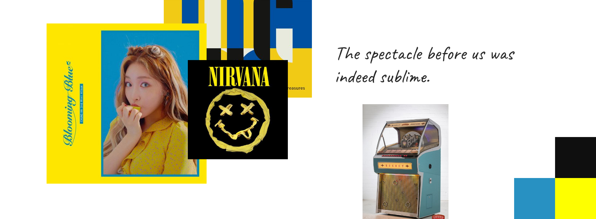

Redesigned shopping experience and CMS for local record store

01 Brief
Forever Young Records is a family owned and operated independent record store in Grand Prairie, TX. Their mission is to offer a large selection of high quality music at reasonable costs. They sell over 250,000 items from new releases to classics, in various genres and formats.
Objectives
- Improve the online shopping experience
- Develop a CMS for managing inventory efficiently
- Search bar
- Filtering products
- Product catalog management (CMS)
Results
Scope
- Market Research
- Personas
- User Flows
- Sitemap
- Wireframes
- Visual Design
- Functional Requirements & Specs
- Usability Assessment
- Front-End Development
- MySQL Database Development
Timeframe
- 2 months
02 Understanding the Challenge
Forever Young Records is in a transition phase.
The demand for an online presence continues to increase as their clientele base spreads past the local community. To support this growth in online customers, I identified some usability issues with their current site and shopping experience. I sought to solve these issues with my redesign.
The Homepage
Products aren’t listed. Difficult for customers to quickly browse, especially when they don’t know what they’re looking for. Increases bounce rate (poor SEO).
The Search Bar
Imagine this - You recently purchased a record player and you need to buy some vinyl. You want to see all available vinyl, regardless of artist. However, the current site requires that you type in an artist or title first - the opposite of your goal. You leave the site.
The scenario above highlights a key issue with the site's current searchability. A user must first search for a artist or title, before filtering the results by genre or format. The problem is that the user must know what they want to buy, before coming to the site.
The Product Page
Missing product image, an important factor in a customer’s decision to purchase. Customers want to see what they’re buying.
Too much information for the viewer to digest, makes the objective hierarchy unclear.
“Add to Cart” button is difficult to locate.
03 Personas
The target audience is men and women between the ages of 24 - 60.

The Millennial *
- Tech-savy
- Most likely to shop online
- Site Goal: Find recently released and classic records at affordable prices
- Site Needs: Modern, online shopping experience
- *According to Fortune Magazine, 50% of vinyl buyers are 18-34 years old

The Old Soul
- Independent, knowledgeable, introspective, nostalgic
- Likes tangible items, more likely to visit the store than shop online
- Site Needs: See store hours
The Collector
- Patient, resourceful, diligent
- Site Goal: Find specific items, often rare or limited edition, in good to mint condition
- Site Needs: Detailed search filters
04 Sitemap

05 Wireframes
Low-fidelity

06 Visual Design
"Fresh & Funky" Stylescape
Originally inspired by designs from the 70s and 80s, I decided to avoid over representing a single decade or design trend. Instead, I selected a bright dual color palette inspired by their current blue and yellow logo. A “handwritten” font for the headings gives the design a personal and nostalgic feeling, which reflects the customer’s attitude towards the brand.

07 Functional Requirements
Feature #3: Product Catalog
| # | Need | Title | Description |
|---|---|---|---|
| 1.1 | Help customers find products | Search | The website shall allow customers to search the catalogue and query the database with multiple requests. |
| 2.1 | Increase customer awareness of new products | Browse | The website shall allow customers to easily browse new products. |
| 3.1 | Add, edit, and delete products | CMS | The website shall allow the client to upload new products and edit or delete existing ones. |
| 4.1 | Increase online sales | Shopping Cart | The website shall allow customers to add products to a shopping cart. |
| Field | Example |
|---|---|
| Use Case Name | User Search of Product Catalogue |
| Use Case Specifier | Elizabeth Slonaker, Web Designer and Developer |
| Version History | Version 001 10/4/19 |
| Summary | This Use Case describes the process by which a user searches for a desired product from the catalogue, either through a typed input field or selecting options from a category. |
| Trigger | The user desires to find the items that they are looking to purchase. |
| Outline of Events | 1. The Use Case begins when the user enters the website and clicks on the product catalogue. 2. The system responds by delivering the user the catalogue from a database. 3. The user inputs data into a search field(s). 4. The system responds by querying the database and displaying the results. 5. The user proceeds to click and view the delivered products. |
| Alternative Paths | In step 3, if the item that a user has searched is sold out, a message will convey this information to the user, and the user will be given the option to view similar products or perform another search. |
| Exception Paths | In step 3, if the user performs a search that yields zero results, the system will notify the user that there are no search results and that the user needs to modify their search. |
| Extension Paths | 1. The product catalogue is accessible to the user. 2. The system has access to the current product list. |
| Assumptions | The user knows the product they are looking for, or at least has a search parameter in mind. |
| Preconditions | The product catalogue is updated. |
| Post Conditions | The user finds the item they are looking for. |
| Business Rule | 1. Products that are sold out or unavailable will not be listed in the product results. 2. If a product is marked down, this discount will be reflected in the price. |
08 Mapping Client Flow
Feature #3: Product Catalog
The client will be able to add new products and edit and delete existing products. The following user flow maps the client's journey from opening the product catalog, to displaying all the items stored in the database.

09 Mapping Customer Flow
Feature #3: Product Catalog
The customer will be able to browse and search the catalog. The following user flow maps the customer's journey from opening the catalog, to displaying a selected item.

10 Searching, Filtering, CMS
Developing 3 Database-Supported Features
1. Functional Search Bar
Step 1
User searches an Artist, Title, or Barcode
Step 2
Matching products are retrieved from SQL database
Step 3
Website displays product(s)
Objective #1: Improve the online shopping experience
This redesigned search bar improves the shopping experience by allowing the user to independently search for items, without having to select a specific category first. In the visual hierarchy, the search bar is positioned at the top. The home page displays products upon page load, making quick browsing much easier than before.

2. Highly Customized Filters
Step 1
User filters by Genre, Format, or Quality. Filters can be combined.
Step 2
Matching products are retrieved from SQL database
Step 3
Website displays product(s)
Objective #1: Improve usability of the online shopping experience
This redesigned filtering system improves the shopping experience by allowing users to filter all products in the catalog, independent from the search bar. This was an issue with the old site, which required users to search for an artist or title before applying filters.

3. Managing Products (CMS)
Step 1
Admin logs into the Product Management System
Step 2
All products stored in the mySQL Database are retrieved
Step 3
Admin can add new products, edit existing products, or delete products
Objective #2: Implement a Content Management System to manage inventory
The newly developed CMS allows the client to quickly manage all products directly from their website. The client can interact with a database without knowing a line of code. This guarantees a smooth handoff of the website to the client.

Logging into the CMS and adding a new product
11 Usability Assessment
Two weeks before the completion of the final site, I conducted an assessment to test the usability of the search bar and product CMS.
Questions Addressed by Assessment
1. Will the users easily find the search bar in its present location?
2. Can users easily navigate to the login admin page?
3. Will the users easily find the button to upload an image, and know how to navigate back to the product catalog?
I gave the following scenarios and tasks for the user to perform. The hesitation time for each task, incorrect searches, incorrect clicks, and approximate time it took to complete each task was recorded.
Scenario 1
1. Type “The Beatles” into the search bar.
2. Go to the admin login page and enter the following credentials into the form.
3. Locate the Beatles item from the list and navigate to the edit page. Change the price of the item to .99 cents and submit the new product details.
4. Do not log out! Please proceed to scenario 2.
Scenario 2
1. Choose any product and proceed to the edit form.
2. Upload a new image of your choice to be the product image.
3. Return to the complete list of products.
Issues Observed
1. Search for “beatles” did not come up
2. Delayed response when trying to locate the admin login
3. Confused on how to return to product listing page after editing a product
4. Confused on how to return to product listing page after uploading an image
Analysis
The admin link is too small. Users found after moments of hesitation. Move this link from the top right corner to the primary navigation. Add a lock icon to differentiate this link from the rest of the main links.
Change search bar parameters to accept searches with keywords
Once the client successfully adds or edits a product, display a link to the product listing page in the success message. Client needs to know how to get back to the main admin page.
12 Results


Reflection
This is my first time using SQL to build a back-end database. I experimented, debugged, and generated many failed queries. I had to overcome the fear of breaking the code, which improved my coding skills exponentially. I'm proud of the final product, and I'm excited to use these new skils to breathe life into my future designs.